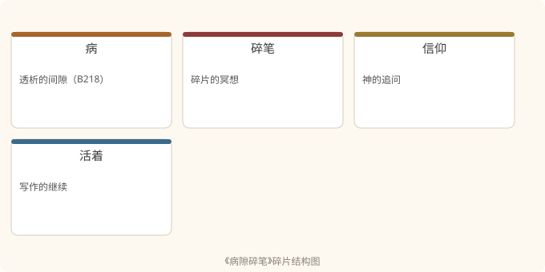

病隙碎笔
一、基本信息
| 作者 | 史铁生 |
|---|---|
| 成书/出版 | 2002年（作者页 B218 口径：Fragments Written in the Hiatus of Illness (病隙碎笔, 2002)） Shi Tiesheng — Wikipedia (EN)（百科全书） |
| 国别/地区 | 中国 |
| 时代 | 现当代 · 当代 |
| 体裁 | 随笔集 |
| 语言 | 汉语（白话） |

《病隙碎笔》碎片结构图（主题·结构图）
二、创作背景
英文维基（B218）：'Fragments Written in the Hiatus of Illness (病隙碎笔, 2002), a collection of meditative essays composed during dialysis treatments'——透析期间写成的冥想随笔。
作者页（B218）：史铁生获老舍文学奖（2002）（B218 获奖列表——具体作品待核）。
三、内容脉络
六编（编数通说待核）：生死、信仰、爱情、身份的碎片式思考。
四、主要人物表
| 人物 | 身份 | 说明 |
|---|---|---|
| 史铁生 | 随笔作者 | 透析间期的思考者（B218） |
五、主题与艺术特点
- '职业是生病'的写作（通说待核）。
- 信仰与神的追问（通说）。
- 碎片文体的完整性（通说待核）。
六、影响与评论
- 英文维基：透析期间写成的冥想随笔（B218）。
Shi Tiesheng — Wikipedia (EN)（百科全书） - 作者页：2002年老舍文学奖（B218）。
Shi Tiesheng — Wikipedia (EN)（百科全书）
七、阅读建议
难点
- 碎片体的阅读节奏。
- 宗教追问的思想密度。
- 《病隙碎笔》（陕西师范大学出版社/人民文学出版社版本，通说待核）。
先《我与地坛》后本作。
八、待核实
- 六编编名核对。
- 2002年老舍文学奖（B218 已载）具体作品核对。
- '职业是生病'自述出处待核。
本页主要来源
史铁生的其他收录作品：我与地坛